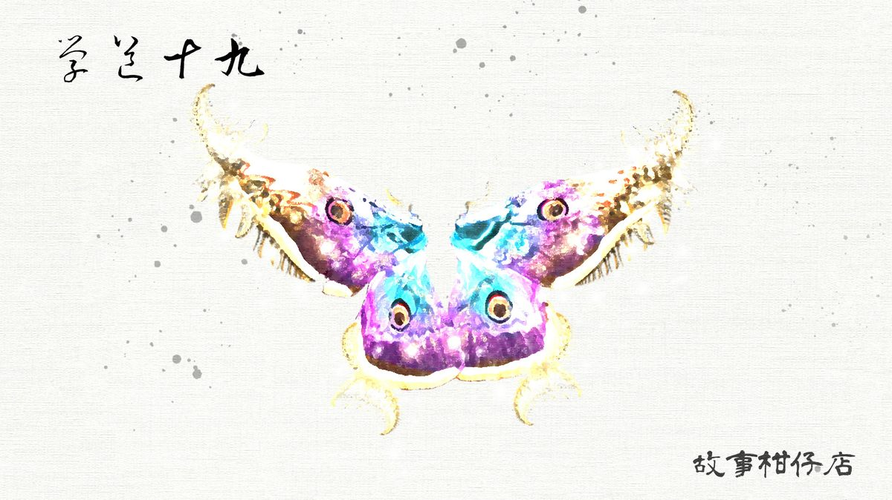

玄墨行者．學道（十九）：烏蝶

一行人穿過蔓生雜草，來到鎖妖庫。天樞望望四周鋪天蓋地的木頭隔間，轉身對拾兒說：「你大概也猜到了，最後一關，考你的收妖本領。」
天樞走入那條兩邊塞滿各類妖物的潮濕甬道，一會兒彎腰端詳籠中奄奄一息的精怪，一會兒又敲敲籠樁要牠們安靜一點。
最後，他停在一隔間前，手刀一挑，咬緊鎖死的木樁緩緩鬆開，綻出一道缺口，一紙茶色薄片率先伸了出來。
「你就好好跟烏蝶打一場吧。」
天樞後退，其餘五者則守住庫門口，那薄片掙扎地從缺口掙了出來，在火光下緩緩現身，巨大的影子幾乎蓋住了拾兒的身影。
拾兒沒見過這麼大的蝴蝶，牠展翅如鷹，蝶翼沾滿點點螢光黃及桃紅色點，每一振翅，都閃得人眼花撩亂。
拾兒趕緊鎮定下來，端琴弄弦，奏一曲〈鴻門宴〉，歡迎搧翼生怪風的烏蝶。今夜，他要速戰速決。
望著拾兒對付烏蝶的背影，玉衡數度出現幻覺，彷彿是眼前不是別人，而是天璣。每一音節的尾音，那背影都會下意識地將手往右上方揮去，像一艘遠航的船，像一隻返家的飛鳥，意氣風發得宛如開天闢地。
這個習慣，天璣從好久好久以前就有了，只是玉衡沒想到，他連這微不足道、只有自己記得的小事，都留給了拾兒。
玉衡很意外天樞挑了烏蝶應戰，原以為會找更難對付的。此處不寬闊，一展翅便要削過兩旁隔間，對牠來說相當吃虧，玉衡眼尖發現，蝶翼邊緣已磨損出缺角。
倒也不是天樞善良。此地雖對烏蝶不利，但他刻意挑選沒有聽覺的妖物，就是為了看看拾兒的真功夫。
不知拾兒是否不瞭烏蝶沒有聽覺，手上琴曲不只不停，還越彈越急，絮絮叨叨、急急切切地絃聲，讓兩旁被關住的妖物紛紛騷動起來，特別是角落裡一隻眉毛倒竪的雷公鳥，本來病懨懨的，隨著曲調愈顯高昂，牠開始發了狂似的不斷衝撞木籠。可木籠是施了法的，雷公鳥每一撞都哀叫連連。
烏蝶絲毫不受影響，像架直升機俯衝而下，銳利如刃的蝶翼劃過拾兒右膀，若非閃得快，破的可不只衣服。
一眨眼，烏蝶卻消失了。出了木籠，烏蝶的擬態能力，讓牠能悄無聲息地隱藏在拾兒跟前，不被察覺。
敵身未明，不能停手。拾兒的指頭愈來愈急，一邊小心閃避烏蝶可能的攻擊，一邊將曲彈得如急急軍令，腳一步步慢慢地向庫門移動。
烏蝶冷不防地由拾兒的影中竄了出來，一個弓步側身，拾兒勉強避開閃著螢光的蝶翼，烏蝶隨即又在眼前隱沒消去。
手上琴曲未停，拾兒已離庫口只有一步，而庫口狹小，加上五位行者，若烏蝶再次進攻，這次劃破的就不只是拾兒衣裳了。
烏蝶抓準時機，雙翼蜷身，如子彈般對準拾兒眉心而來，在旁的玉衡不顧規矩，正想出手相助，一旁木籠裡被曲聲挑撥的雷公鳥卻狠狠跳起，撞上低矮天花板，牠腳爪一踏、再踏、三踏，召來遠方天邊一道銀白光束咬破黑夜。
那道閃電瞬間撚亮了妖庫口，照得所有人及妖物一身慘白。烏蝶見光，彷如觸電在空中顫抖兩下，隨即飄落在地，像一幅標本，動也不動。
「行了，收拾一下吧。」
大局已定。天樞使了眼色，拾兒曲調一轉，變得柔美婉轉，如黃鶯出谷，如淙淙溪流。一時間，妖物們漸漸恢復了平靜，就連暴衝雷公鳥都歪倒靠著木籠，疲憊極了的模樣。
是挺聰明的。天樞心想。善用烏蝶畏光的特性，刻意以曲撩撥雷公鳥，用最短時間擊敗了對手，老三的傳人，果然不能小看。可惜大曲就差在這。
樂曲漸緩，逐漸平息，最後一個尾音滴溜在無際山谷間，夜空的北斗七星，今夜依舊閃爍如鑽，而旁邊的一大一小青色妖星，熒熒的，像火燒。
－－－－－
#新連載依舊兩天一篇每晚準時六點半喔
#請人客多多指教
#記得去各大書店買我們的書故事柑仔店哩

